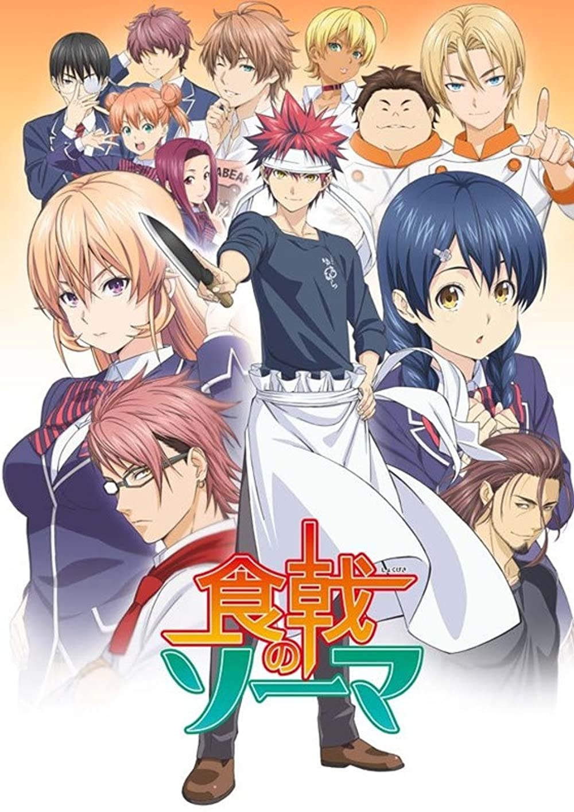

Food Wars - Yūto Tsukuda and Shun Saeki

Overview & Recap
Food Wars is a cooking/comedy anime based off of a manga. It follows Soma Yukihira as he battles some of the world's best chefs to prove that he is indeed a good chef. He also enrolls in a culinary school to improve his skills.
Review
ok food wars is literally food porn. im not even kidding like everytime a character eats good food their clothes decide to magically fly off. Putting that aside, the actual recipes are really detailed and well thought out. Its a very light anime as it has a lot of comedy. I love soma's dynamic with his dad they literally have cook offs every week to see who can make the most disgusting food love that for them.
Rating
hmhmhm a 3/5 i think. its a very light anime that is good for being a filler. i dont think i would watch it again though as it does get a bit repetitve with the food fights and stuff, but you should give it a go, its really funyy